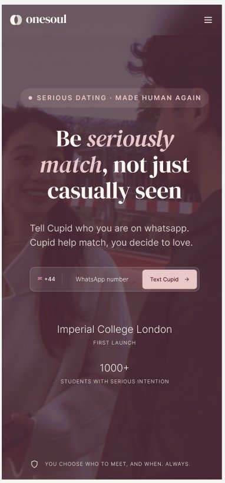
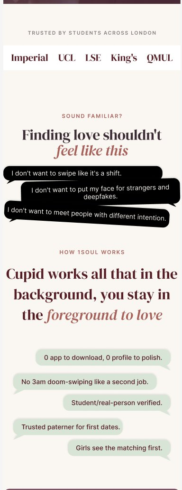
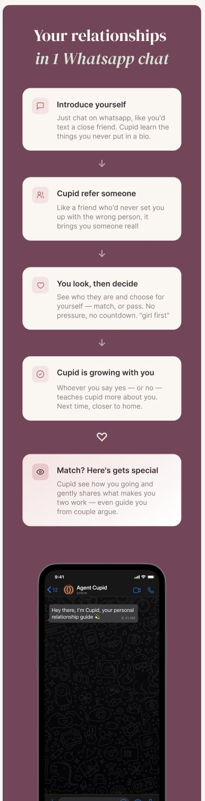
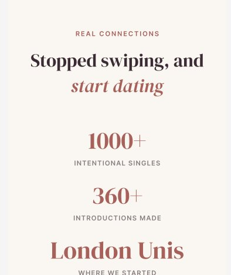

Project overview
1Soul (OneSoul) is an AI-matchmaking product built around "Agent Cupid" — instead of swiping through profiles, users talk to Cupid on WhatsApp, and Cupid introduces them to a small number of real, considered matches. It launched first among students at Imperial College London and has since expanded across London universities.
I was the sole designer on the team, independently owning product design, UX and select marketing work, and running an AI-design-AI pipeline end-to-end with the founder — using AI to accelerate research synthesis and iteration, always grounded in real user evidence rather than AI's own assumptions.
User research
Competitor signal mining
Before writing a word of positioning, I read through the comment section under a viral post about an AI-matchmaking competitor to see, unfiltered, what real daters feared about "AI-run dating." Three patterns stood out:
- The strongest backlash was to any language implying AI replaces or handles the relationship itself — "AI dates AI, then you meet" framing was rejected even by users who liked the underlying idea.
- The second-strongest concern was privacy and deepfakes — users asked directly how their photos would be protected, a trust gap the competitor's own page never addressed.
- One notably positive comment confirmed the mechanic itself — AI narrowing down candidates before a human commits time — was welcomed. The problem was never the idea. It was the wording.
User interviews
I ran four in-depth interviews with people in the target audience (a mix of current and lapsed dating-app users), then used AI to help systematically cluster the raw transcripts — not by interviewee, but by problem type, so findings could be prioritised and acted on. That synthesis surfaced eight areas, the highest-priority being:
- Brand tone — the site read as "dark" and "mysterious," more like a spellbook than a dating product, undercutting the fact that it's built for serious daters
- Unclear audience — is this for students only, or everyone? The "Connecting students at…" module was described as confusing rather than reassuring
- Trust & safety, especially for women — one participant was uneasy that a match arrived with a name but no photo or shared context, and said she would never accept an AI-scheduled meeting without a conversation first
- AI credibility — participants were curious what Cupid actually does (chat with you? pick the venue?) but the product didn't say
Website redesign
The research reframed the brief: this wasn't a visual refresh, it was a trust and positioning problem. Three shifts drove the redesign — soften the "AI decides for you" framing, replace investor-speak social proof with something specific and local, and give safety its own first-class section instead of a passing mention.
Before


After




AI-accelerated workflow
AI ran through the process, not as a shortcut around research but as a way to move faster once the research existed: clustering four raw interview transcripts into a prioritised, actionable framework in hours instead of days, and rapidly drafting and testing copy directions grounded in that evidence — every direction still hand-edited and checked back against what users actually said, not generated in a vacuum.
Also part of the role
Alongside product and UX, I contributed to early growth and marketing — including an on-the-ground content strategy (street interviews at London universities) designed to pair content production with same-day sign-ups, plus platform-specific playbooks for Instagram and TikTok.